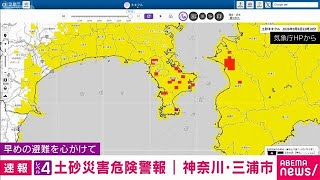

<title>最近の三浦</title>
<link rel="preconnect" href="https://fonts.googleapis.com">
<link rel="preconnect" href="https://fonts.gstatic.com" crossorigin>
<link href="https://fonts.googleapis.com/css2?family=Shippori+Mincho:wght@400;500;600;700&display=swap" rel="stylesheet">
<style>
:root{ --bg:#D8CFBC; --ink:#4A4238; --ink2:rgba(74,66,56,.72); --mute:rgba(74,66,56,.55); --rule:rgba(74,66,56,.85); --hair:rgba(100,80,60,.22); --box:rgba(255,250,240,.38); --cream:#F5EEE0; --latin:-apple-system,"Helvetica Neue",sans-serif; }
*{box-sizing:border-box;margin:0;padding:0}
body{font-family:"Shippori Mincho","Hiragino Mincho ProN","Yu Mincho",serif;background:var(--bg);color:var(--ink);line-height:1.85;letter-spacing:.04em;font-feature-settings:"palt";font-size:15px;overflow-x:hidden;-webkit-font-smoothing:antialiased}
/* 漆喰／紙の繊維目 */
body::before{content:"";position:fixed;inset:0;background-image:url("data:image/svg+xml;utf8,<svg xmlns='http://www.w3.org/2000/svg' width='300' height='300'><filter id='n'><feTurbulence type='fractalNoise' baseFrequency='2.8' numOctaves='2' seed='3'/><feColorMatrix values='0 0 0 0 0.4 0 0 0 0 0.35 0 0 0 0 0.3 0 0 0 0.3 0'/></filter><rect width='100%' height='100%' filter='url(%23n)'/></svg>");mix-blend-mode:multiply;opacity:.28;pointer-events:none;z-index:1}
body::after{content:"";position:fixed;inset:-5%;background-image:radial-gradient(ellipse 40% 30% at 25% 30%,rgba(150,130,100,.05),transparent 70%),radial-gradient(ellipse 35% 30% at 75% 70%,rgba(160,140,110,.04),transparent 70%);mix-blend-mode:multiply;pointer-events:none;z-index:1}
main{position:relative;z-index:2;max-width:760px;margin:0 auto;padding:18px 5vw 40px}
a{color:inherit}
.latin{font-family:var(--latin);letter-spacing:.3em;text-transform:uppercase;font-size:9px}
/* ── 題字 ── */
.masthead{border-top:4px double var(--rule);border-bottom:1px solid var(--rule);padding:12px 0 18px}
.issue{font-size:11px;letter-spacing:.2em;color:var(--ink2);display:flex;flex-wrap:wrap;gap:0 16px;border-bottom:1px solid var(--hair);padding-bottom:8px;margin-bottom:12px}
.issue .latin{align-self:center;opacity:.7}
.mh-lead{font-size:clamp(14px,2.4vw,16px);line-height:2;letter-spacing:.06em;max-width:30em}
.areas{font-size:11px;letter-spacing:.3em;color:var(--ink2);margin-top:12px}
.daiji{font-size:clamp(36px,9vw,64px);font-weight:600;letter-spacing:.2em;line-height:1.2;margin:6px 0 16px;text-wrap:balance}
/* ── 前回は ── */
.toggle{position:sticky;top:0;z-index:20;display:flex;align-items:baseline;gap:0 16px;flex-wrap:wrap;padding:10px 0;margin:0 0 22px;background:var(--bg);border-bottom:1px solid var(--rule);box-shadow:0 8px 12px -10px rgba(74,66,56,.35)}
.toggle .q{font-size:12px;letter-spacing:.25em;color:var(--ink2)}
.toggle button{font:inherit;font-size:14px;letter-spacing:.15em;background:none;border:0;color:inherit;cursor:pointer;padding:2px 0;opacity:.5;border-bottom:1.5px solid transparent}
.toggle button[aria-pressed="true"]{opacity:1;font-weight:600;border-bottom-color:currentColor}
.toggle button:focus-visible{outline:1px solid currentColor;outline-offset:3px}
/* ── 面 ── */
.men{display:flex;align-items:baseline;justify-content:space-between;border-top:1px solid var(--rule);border-bottom:3px double var(--rule);padding:6px 2px;margin:40px 0 18px;font-size:15px;font-weight:600;letter-spacing:.35em}
.men .latin{color:var(--ink2)}
.ym{font-size:11px;letter-spacing:.25em;color:var(--ink2);margin:26px 0 10px;display:flex;align-items:center;gap:10px}
.ym::after{content:"";flex:1;height:1px;background:var(--hair)}
.month:first-child .ym{margin-top:0}
/* ── 記事：段組 ── */
.cols{columns:1;column-gap:28px;column-rule:1px solid var(--hair)}
@media (min-width:600px){ .cols{columns:2} }
.art{break-inside:avoid;padding:0 0 18px;margin:0 0 18px;border-bottom:1px solid var(--hair)}
.art[hidden]{display:none}
.photo{margin:0 0 10px}
.photo img{display:block;width:100%;height:auto;max-height:180px;object-fit:cover;object-position:50% 45%;filter:saturate(.85) contrast(.95) sepia(.08)}
.photo figcaption{font-size:10px;letter-spacing:.12em;color:var(--mute);margin-top:4px;text-align:right}
.ran{display:flex;align-items:center;gap:10px;font-size:11px;letter-spacing:.15em;color:var(--ink2);margin-bottom:8px}
.box{border:1px solid var(--rule);color:var(--ink);padding:0 6px;line-height:1.6;letter-spacing:.25em;font-size:10.5px;font-weight:600}
.ago{color:var(--mute)}
h3{font-size:19px;font-weight:600;letter-spacing:.06em;line-height:1.55;margin-bottom:10px;text-wrap:balance}
.fact{font-size:14px;line-height:1.95;text-align:justify;margin-bottom:10px}
.dl{font-weight:600}
.talk{background:var(--box);border:1px solid var(--hair);padding:8px 12px;font-size:13.5px;line-height:1.9;margin-bottom:10px}
.tl{display:inline-block;font-size:10px;letter-spacing:.3em;color:var(--ink2);border-bottom:1px solid var(--hair);margin-right:10px}
.src{font-size:10px;letter-spacing:.1em;color:var(--mute);line-height:1.9}
.src .cf{letter-spacing:.25em;margin-right:10px;color:var(--ink2)}
.src a{text-decoration:none;border-bottom:1px solid var(--hair);margin-right:10px}
/* 行ってみたい */
.toggle .tag-reco{border:1px dashed var(--rule);padding:3px 10px;opacity:1;letter-spacing:.15em}
.toggle .tag-reco .n{font-weight:700;margin-left:2px}
.toggle .tag-reco[aria-pressed="true"]{background:var(--ink);color:var(--cream);border-style:solid}
.box.reco-tag{border-style:dashed}
.toggle .tag-want{margin-left:auto;border:1px solid var(--rule);padding:3px 10px;opacity:1;letter-spacing:.15em}
.toggle .tag-want .n{font-weight:700;margin-left:2px}
.toggle .tag-want[aria-pressed="true"]{background:var(--ink);color:var(--cream)}
.box.want-tag{background:var(--ink);color:var(--cream);border-color:var(--ink)}
.want-off{font-size:11px;letter-spacing:.15em;color:var(--mute);background:none;border:0;cursor:pointer;padding:4px 0;margin-left:6px;text-decoration:underline;text-underline-offset:3px}
.want{margin:0 0 10px}
.want-btn{font:inherit;font-size:13px;letter-spacing:.2em;color:var(--ink);background:none;border:1px solid var(--rule);padding:5px 14px;cursor:pointer;min-height:36px}
.want-btn:focus-visible,.want-link:focus-visible{outline:1px solid currentColor;outline-offset:3px}
.want-btn[aria-expanded="true"],.want.done .want-btn{background:var(--ink);color:var(--cream)}
.want.done .want-btn::before{content:"✓ "}
.want-to{margin-top:8px;border-left:2px solid var(--rule);padding:2px 0 2px 12px}
.want-what{font-size:12.5px;line-height:1.8;color:var(--ink2);margin-bottom:6px}
.want-link{display:inline-block;font-size:13px;letter-spacing:.1em;text-decoration:none;border-bottom:1px solid var(--rule);margin:2px 18px 4px 0;padding:4px 0}
/* 参加予定・下調べ */
.going-box{background:var(--ink);color:var(--cream);border-color:var(--ink)}
.entry{font-size:13px;line-height:1.9;border:1px solid var(--rule);padding:6px 12px;margin:0 0 10px;display:flex;flex-direction:column}
.entry b{font-size:14.5px;letter-spacing:.08em}
.entry span{font-size:11.5px;color:var(--ink2)}
.count{font-size:16px;font-weight:700;letter-spacing:.1em;color:var(--ink);margin-left:auto}
.art.going{border-left:3px solid var(--rule);padding-left:14px}
.art.going.lead{border-left:0;padding-left:0}
.prep{border-top:3px double var(--rule);border-bottom:1px solid var(--rule);padding:10px 0 8px;margin:4px 0 12px}
.prep h4{font-size:13px;font-weight:600;letter-spacing:.35em;margin-bottom:8px;display:flex;align-items:baseline;gap:12px}
.prep h4 small{font-size:10px;font-weight:400;letter-spacing:.15em;color:var(--mute)}
.prep dl{font-size:13px;line-height:1.8}
.prep dt{font-weight:600;letter-spacing:.08em;color:var(--ink2);margin-top:8px}
.prep dt:first-child{margin-top:0}
.prep dd{margin:0}
.prep dd .src{display:block}
.oq{font-size:12.5px;line-height:1.9;color:var(--ink2);margin-top:8px;border-top:1px solid var(--hair);padding-top:6px}
/* 一面 */
.art.lead{column-span:all;border-bottom:3px double var(--rule);padding-bottom:22px;margin-bottom:26px}
.art.lead .photo img{max-height:280px}
.art.lead h3{font-size:clamp(24px,6vw,32px);font-weight:700;letter-spacing:.08em;line-height:1.5}
.art.lead .fact{font-size:15.5px}
.empty{font-size:13px;color:var(--ink2);padding:8px 0}
/* ── 灯台（囲み） ── */
.df{margin:8px 0 0;border:1px solid var(--rule);padding:14px 16px;display:flex;gap:16px;align-items:stretch;background:var(--box)}
.df .k{flex:none;font-size:12px;letter-spacing:.3em;font-weight:600;writing-mode:vertical-rl;text-orientation:upright;white-space:nowrap;border-right:1px solid var(--hair);padding-right:10px;display:flex;align-items:center}
.df .b{display:flex;flex-direction:column;justify-content:center;gap:4px;min-width:0}
.df .v{font-size:clamp(18px,4.6vw,24px);letter-spacing:.1em;line-height:1.5}
.df .n{font-size:11px;letter-spacing:.15em;color:var(--ink2)}
/* ── 映像欄 ── */
.vgrid{display:grid;grid-template-columns:repeat(auto-fill,minmax(150px,1fr));gap:18px 14px}
.vid{display:block;text-decoration:none;min-width:0}
.vid:focus-visible{outline:1px solid currentColor;outline-offset:3px}
.vthumb{position:relative;aspect-ratio:16/9;background:var(--hair);overflow:hidden;border:1px solid var(--hair)}
.vthumb img{display:block;width:100%;height:100%;object-fit:cover;filter:saturate(.85) contrast(.95) sepia(.08)}
.live{position:absolute;left:0;top:0;background:var(--ink);color:var(--cream);font-size:9px;letter-spacing:.3em;padding:1px 6px 1px 8px}
.vtitle{font-size:12.5px;line-height:1.6;margin-top:6px;display:-webkit-box;-webkit-line-clamp:2;-webkit-box-orient:vertical;overflow:hidden}
.vmeta{font-size:10px;letter-spacing:.1em;color:var(--mute);margin-top:2px;white-space:nowrap;overflow:hidden;text-overflow:ellipsis}
/* ── 奥付 ── */
.okuzuke{margin-top:44px;border-top:3px double var(--rule);padding-top:12px;font-size:11px;letter-spacing:.15em;line-height:2;color:var(--ink2)}
.okuzuke .latin{display:block;margin-top:8px;opacity:.7}
</style>
<main>
<header class="masthead">
  <div class="issue"><span>第7号</span><span>2026年9月18日（金）</span><span class="latin">Miura A-tei · Kinkyo</span></div>
  <h1 class="daiji">最近の三浦</h1>
  <p class="mh-lead">城ヶ島、三崎、三浦海岸——<br>この町で起きたこと、はじまったこと、季節のこと。</p>
  <div class="areas">城ヶ島 · 三崎 · 三浦海岸 · 油壺 · 小網代</div>
</header>
<nav class="toggle" role="group" aria-label="前回来てから"><span class="q">前回のご来訪は</span><button data-days="31">一ヶ月前</button><button data-days="93">三ヶ月前</button><button data-days="184">半年前</button><button data-days="366">一年前</button><button class="tag-want" data-tag="want" aria-pressed="false" hidden>行ってみたい <b class="n">0</b></button><button class="tag-reco" data-tag="reco" aria-pressed="false" hidden>おすすめ <b class="n">0</b></button></nav>
<div id="dated">
<div class="month" data-month="2026-09"><h2 class="ym">2026年9月</h2><div class="cols"><article class="art" data-age="-1" data-cat="イベント" data-tags="食,ビール,三浦海岸,駅前">
  <figure class="photo"><figcaption>三浦海岸ビールまつり（号外NET）</figcaption></figure>
  <div class="ran"><span class="box">イベント</span><span class="dt">9/19(土)〜9/23(水)　</span><span class="ago">1日後</span></div>
  <h3>三浦海岸駅前でビールまつり 9/19〜23</h3>
  <p class="fact"><b class="dl">【三浦海岸】</b>三浦海岸ビールまつり 9/19(土)〜23(水祝) 11:00〜19:00（最終日17:00）。三浦海岸駅前の線路下スペース UMICO。クラフトビール日替わり10社、同時にトラック市</p>
  <aside class="talk"><span class="tl">話のタネ</span>駅前で飲めます。入場無料</aside>
  
  <div class="want" data-id="2">
    <button type="button" class="want-btn" aria-expanded="false">行ってみたい</button>
    <div class="want-to" hidden>
      <p class="want-what">三浦海岸ビールまつり<br>9/19(土)〜9/23(水) 11:00〜19:00<br>線路下スペイスUMICO（神奈川県三浦市南下浦町上宮田1497・京急三浦海岸駅前）</p>
      <a class="want-link" href="ics/2.ics">iPhone のカレンダーに追加</a><a class="want-link" href="https://calendar.google.com/calendar/render?action=TEMPLATE&amp;text=%E4%B8%89%E6%B5%A6%E6%B5%B7%E5%B2%B8%E3%83%93%E3%83%BC%E3%83%AB%E3%81%BE%E3%81%A4%E3%82%8A&amp;dates=20260919T110000/20260919T190000&amp;ctz=Asia/Tokyo&amp;location=%E7%B7%9A%E8%B7%AF%E4%B8%8B%E3%82%B9%E3%83%9A%E3%82%A4%E3%82%B9UMICO%EF%BC%88%E7%A5%9E%E5%A5%88%E5%B7%9D%E7%9C%8C%E4%B8%89%E6%B5%A6%E5%B8%82%E5%8D%97%E4%B8%8B%E6%B5%A6%E7%94%BA%E4%B8%8A%E5%AE%AE%E7%94%B01497%E3%83%BB%E4%BA%AC%E6%80%A5%E4%B8%89%E6%B5%A6%E6%B5%B7%E5%B2%B8%E9%A7%85%E5%89%8D%EF%BC%89&amp;details=%E4%B8%89%E6%B5%A6%E6%B5%B7%E5%B2%B8%E3%83%93%E3%83%BC%E3%83%AB%E3%81%BE%E3%81%A4%E3%82%8A%209/19%28%E5%9C%9F%29%E3%80%9C23%28%E6%B0%B4%E7%A5%9D%29%2011:00%E3%80%9C19:00%EF%BC%88%E6%9C%80%E7%B5%82%E6%97%A517:00%EF%BC%89%E3%80%82%E4%B8%89%E6%B5%A6%E6%B5%B7%E5%B2%B8%E9%A7%85%E5%89%8D%E3%81%AE%E7%B7%9A%E8%B7%AF%E4%B8%8B%E3%82%B9%E3%83%9A%E3%83%BC%E3%82%B9%20UMICO%E3%80%82%E3%82%AF%E3%83%A9%E3%83%95%E3%83%88%E3%83%93%E3%83%BC%E3%83%AB%E6%97%A5%E6%9B%BF%E3%82%8F%E3%82%8A10%E7%A4%BE%E3%80%81%E5%90%8C%E6%99%82%E3%81%AB%E3%83%88%E3%83%A9%E3%83%83%E3%82%AF%E5%B8%82%0A%E2%80%BB%E6%9C%80%E7%B5%82%E6%97%A59/23%E3%81%AF17:00%E3%81%BE%E3%81%A7%0A%E5%87%BA%E5%85%B8:%20https://yokosuka.goguynet.jp/2026/09/07/miurakaigan-beermatsuri2026-09/%0A%E6%9C%80%E8%BF%91%E3%81%AE%E4%B8%89%E6%B5%A6:%20https://vaseata.github.io/miura-board/&amp;recur=RRULE:FREQ%3DDAILY%3BCOUNT%3D5" target="_blank" rel="noopener">Google カレンダーに追加</a>
      
      <button type="button" class="want-off" hidden>行ってみたいを外す</button>
    </div>
  </div>
  
  <p class="src"><span class="cf">出典確認</span><a href="https://yokosuka.goguynet.jp/2026/09/07/miurakaigan-beermatsuri2026-09/" target="_blank" rel="noopener">号外NET 横須賀・三浦 9/7</a></p>
</article><article class="art" data-age="-1" data-cat="イベント" data-tags="城ヶ島,灯台,景色,体験">
  <figure class="photo"><figcaption>城ケ島灯台（みうら観光ガイド）</figcaption></figure>
  <div class="ran"><span class="box">イベント</span><span class="dt">9/19(土)　</span><span class="ago">1日後</span></div>
  <h3>9/19 城ケ島灯台の中に入れる日</h3>
  <p class="fact"><b class="dl">【城ヶ島】</b>城ケ島灯台 一般公開 9/19(土) 10:00〜15:00（最終受付14:30）。主催 横須賀海上保安部、城ヶ島の「すすき祭り」に併せて実施。雨天等で中止の場合あり。灯台敷地に駐車場・トイレなし</p>
  <aside class="talk"><span class="tl">話のタネ</span>今週土曜だけ、ふだん入れない灯台の中を見学できます。城ケ島バス停から歩いて5〜10分</aside>
  
  <div class="want" data-id="12">
    <button type="button" class="want-btn" aria-expanded="false">行ってみたい</button>
    <div class="want-to" hidden>
      <p class="want-what">城ケ島灯台 一般公開<br>9/19(土) 10:00〜15:00<br>城ケ島灯台（神奈川県三浦市城ケ島・城ケ島バス停 徒歩5〜10分）</p>
      <a class="want-link" href="ics/12.ics">iPhone のカレンダーに追加</a><a class="want-link" href="https://calendar.google.com/calendar/render?action=TEMPLATE&amp;text=%E5%9F%8E%E3%82%B1%E5%B3%B6%E7%81%AF%E5%8F%B0%20%E4%B8%80%E8%88%AC%E5%85%AC%E9%96%8B&amp;dates=20260919T100000/20260919T150000&amp;ctz=Asia/Tokyo&amp;location=%E5%9F%8E%E3%82%B1%E5%B3%B6%E7%81%AF%E5%8F%B0%EF%BC%88%E7%A5%9E%E5%A5%88%E5%B7%9D%E7%9C%8C%E4%B8%89%E6%B5%A6%E5%B8%82%E5%9F%8E%E3%82%B1%E5%B3%B6%E3%83%BB%E5%9F%8E%E3%82%B1%E5%B3%B6%E3%83%90%E3%82%B9%E5%81%9C%20%E5%BE%92%E6%AD%A95%E3%80%9C10%E5%88%86%EF%BC%89&amp;details=%E5%9F%8E%E3%82%B1%E5%B3%B6%E7%81%AF%E5%8F%B0%20%E4%B8%80%E8%88%AC%E5%85%AC%E9%96%8B%209/19%28%E5%9C%9F%29%2010:00%E3%80%9C15:00%EF%BC%88%E6%9C%80%E7%B5%82%E5%8F%97%E4%BB%9814:30%EF%BC%89%E3%80%82%E4%B8%BB%E5%82%AC%20%E6%A8%AA%E9%A0%88%E8%B3%80%E6%B5%B7%E4%B8%8A%E4%BF%9D%E5%AE%89%E9%83%A8%E3%80%81%E5%9F%8E%E3%83%B6%E5%B3%B6%E3%81%AE%E3%80%8C%E3%81%99%E3%81%99%E3%81%8D%E7%A5%AD%E3%82%8A%E3%80%8D%E3%81%AB%E4%BD%B5%E3%81%9B%E3%81%A6%E5%AE%9F%E6%96%BD%E3%80%82%E9%9B%A8%E5%A4%A9%E7%AD%89%E3%81%A7%E4%B8%AD%E6%AD%A2%E3%81%AE%E5%A0%B4%E5%90%88%E3%81%82%E3%82%8A%E3%80%82%E7%81%AF%E5%8F%B0%E6%95%B7%E5%9C%B0%E3%81%AB%E9%A7%90%E8%BB%8A%E5%A0%B4%E3%83%BB%E3%83%88%E3%82%A4%E3%83%AC%E3%81%AA%E3%81%97%0A%E2%80%BB%E6%9C%80%E7%B5%82%E5%8F%97%E4%BB%9814:30%E3%80%82%E9%9B%A8%E5%A4%A9%E7%AD%89%E3%81%A7%E4%B8%AD%E6%AD%A2%E3%81%AE%E5%A0%B4%E5%90%88%E3%81%82%E3%82%8A%E3%80%82%E6%95%B7%E5%9C%B0%E5%86%85%E3%81%AB%E9%A7%90%E8%BB%8A%E5%A0%B4%E3%83%BB%E3%83%88%E3%82%A4%E3%83%AC%E3%81%AA%E3%81%97%E3%80%82%E5%95%8F%E5%90%88%E3%81%9B%20%E6%A8%AA%E9%A0%88%E8%B3%80%E6%B5%B7%E4%B8%8A%E4%BF%9D%E5%AE%89%E9%83%A8%20046-861-8374%0A%E5%87%BA%E5%85%B8:%20https://miura-info.ne.jp/20260919jyogashimatoudai/%0A%E6%9C%80%E8%BF%91%E3%81%AE%E4%B8%89%E6%B5%A6:%20https://vaseata.github.io/miura-board/" target="_blank" rel="noopener">Google カレンダーに追加</a>
      
      <button type="button" class="want-off" hidden>行ってみたいを外す</button>
    </div>
  </div>
  
  <p class="src"><span class="cf">出典確認</span><a href="https://miura-info.ne.jp/20260919jyogashimatoudai/" target="_blank" rel="noopener">みうら観光ガイド 9/16</a></p>
</article><article class="art" data-age="-1" data-cat="イベント" data-tags="食,城ヶ島,家族,体験">
  <figure class="photo"><figcaption>夕日と城ヶ島大橋</figcaption></figure>
  <div class="ran"><span class="box">イベント</span><span class="dt">9/19(土)〜9/23(水)　</span><span class="ago">1日後</span></div>
  <h3>9/19〜23 城ケ島公園でお芋フェス</h3>
  <p class="fact"><b class="dl">【城ヶ島】</b>県立城ケ島公園「秋のお芋フェス」9/19(土)〜23(水祝) 10:00〜16:00頃、公園入口（長屋門付近）。家族連れに城ケ島産さつまいもをプレゼント（なくなり次第終了）、観光協会の「芋けんぴソフトクリーム」を販売。雨天・荒天中止。主催 三浦市観光協会</p>
  <aside class="talk"><span class="tl">話のタネ</span>連休中なら城ケ島公園の入口で芋けんぴソフトが食べられます。家族で行くとさつまいももらえるそうです</aside>
  
  <div class="want" data-id="13">
    <button type="button" class="want-btn" aria-expanded="false">行ってみたい</button>
    <div class="want-to" hidden>
      <p class="want-what">県立城ケ島公園 秋のお芋フェス<br>9/19(土)〜9/23(水) 10:00〜16:00<br>県立城ケ島公園入口（長屋門付近）</p>
      <a class="want-link" href="ics/13.ics">iPhone のカレンダーに追加</a><a class="want-link" href="https://calendar.google.com/calendar/render?action=TEMPLATE&amp;text=%E7%9C%8C%E7%AB%8B%E5%9F%8E%E3%82%B1%E5%B3%B6%E5%85%AC%E5%9C%92%20%E7%A7%8B%E3%81%AE%E3%81%8A%E8%8A%8B%E3%83%95%E3%82%A7%E3%82%B9&amp;dates=20260919T100000/20260919T160000&amp;ctz=Asia/Tokyo&amp;location=%E7%9C%8C%E7%AB%8B%E5%9F%8E%E3%82%B1%E5%B3%B6%E5%85%AC%E5%9C%92%E5%85%A5%E5%8F%A3%EF%BC%88%E9%95%B7%E5%B1%8B%E9%96%80%E4%BB%98%E8%BF%91%EF%BC%89&amp;details=%E7%9C%8C%E7%AB%8B%E5%9F%8E%E3%82%B1%E5%B3%B6%E5%85%AC%E5%9C%92%E3%80%8C%E7%A7%8B%E3%81%AE%E3%81%8A%E8%8A%8B%E3%83%95%E3%82%A7%E3%82%B9%E3%80%8D9/19%28%E5%9C%9F%29%E3%80%9C23%28%E6%B0%B4%E7%A5%9D%29%2010:00%E3%80%9C16:00%E9%A0%83%E3%80%81%E5%85%AC%E5%9C%92%E5%85%A5%E5%8F%A3%EF%BC%88%E9%95%B7%E5%B1%8B%E9%96%80%E4%BB%98%E8%BF%91%EF%BC%89%E3%80%82%E5%AE%B6%E6%97%8F%E9%80%A3%E3%82%8C%E3%81%AB%E5%9F%8E%E3%82%B1%E5%B3%B6%E7%94%A3%E3%81%95%E3%81%A4%E3%81%BE%E3%81%84%E3%82%82%E3%82%92%E3%83%97%E3%83%AC%E3%82%BC%E3%83%B3%E3%83%88%EF%BC%88%E3%81%AA%E3%81%8F%E3%81%AA%E3%82%8A%E6%AC%A1%E7%AC%AC%E7%B5%82%E4%BA%86%EF%BC%89%E3%80%81%E8%A6%B3%E5%85%89%E5%8D%94%E4%BC%9A%E3%81%AE%E3%80%8C%E8%8A%8B%E3%81%91%E3%82%93%E3%81%B4%E3%82%BD%E3%83%95%E3%83%88%E3%82%AF%E3%83%AA%E3%83%BC%E3%83%A0%E3%80%8D%E3%82%92%E8%B2%A9%E5%A3%B2%E3%80%82%E9%9B%A8%E5%A4%A9%E3%83%BB%E8%8D%92%E5%A4%A9%E4%B8%AD%E6%AD%A2%E3%80%82%E4%B8%BB%E5%82%AC%20%E4%B8%89%E6%B5%A6%E5%B8%82%E8%A6%B3%E5%85%89%E5%8D%94%E4%BC%9A%0A%E2%80%BB16%E6%99%82%E3%81%AF%E3%80%8C%E9%A0%83%E3%80%8D%E3%80%82%E9%9B%A8%E5%A4%A9%E3%83%BB%E8%8D%92%E5%A4%A9%E4%B8%AD%E6%AD%A2%E3%80%82%E7%AC%AC1%E9%A7%90%E8%BB%8A%E5%A0%B4%E6%BA%80%E8%BB%8A%E6%99%82%E3%81%AF%E8%87%A8%E6%99%82%E9%A7%90%E8%BB%8A%E5%A0%B4%EF%BC%8810%E3%80%9C17%E6%99%82%EF%BC%89%0A%E5%87%BA%E5%85%B8:%20https://miura-info.ne.jp/jyogashima-202609/%0A%E6%9C%80%E8%BF%91%E3%81%AE%E4%B8%89%E6%B5%A6:%20https://vaseata.github.io/miura-board/&amp;recur=RRULE:FREQ%3DDAILY%3BCOUNT%3D5" target="_blank" rel="noopener">Google カレンダーに追加</a>
      
      <button type="button" class="want-off" hidden>行ってみたいを外す</button>
    </div>
  </div>
  
  <p class="src"><span class="cf">出典確認</span><a href="https://miura-info.ne.jp/jyogashima-202609/" target="_blank" rel="noopener">みうら観光ガイド 9/10</a></p>
</article><article class="art" data-age="-9" data-cat="イベント" data-tags="祭り,海,三浦海岸,食">
  <figure class="photo"><figcaption>三浦海岸</figcaption></figure>
  <div class="ran"><span class="box">イベント</span><span class="dt">9/27(日)　</span><span class="ago">9日後</span></div>
  <h3>9/27 三浦海岸inオータムフェス</h3>
  <p class="fact"><b class="dl">【三浦海岸】</b>「三浦海岸inオータムフェス」9/27(日)、三浦海岸（京急三浦海岸駅徒歩5分）。主催 三浦青年会議所。同時開催の地引網大会（10:01〜）は定員に達し受付終了</p>
  <aside class="talk"><span class="tl">話のタネ</span>月末の日曜なら三浦海岸がにぎやかです。毎年1万人以上来るそうです</aside>
  
  <div class="want" data-id="6">
    <button type="button" class="want-btn" aria-expanded="false">行ってみたい</button>
    <div class="want-to" hidden>
      <p class="want-what">三浦海岸inオータムフェス<br>9/27(日)（終日）<br>三浦海岸（京急三浦海岸駅 徒歩5分）</p>
      <a class="want-link" href="ics/6.ics">iPhone のカレンダーに追加</a><a class="want-link" href="https://calendar.google.com/calendar/render?action=TEMPLATE&amp;text=%E4%B8%89%E6%B5%A6%E6%B5%B7%E5%B2%B8in%E3%82%AA%E3%83%BC%E3%82%BF%E3%83%A0%E3%83%95%E3%82%A7%E3%82%B9&amp;dates=20260927/20260928&amp;ctz=Asia/Tokyo&amp;location=%E4%B8%89%E6%B5%A6%E6%B5%B7%E5%B2%B8%EF%BC%88%E4%BA%AC%E6%80%A5%E4%B8%89%E6%B5%A6%E6%B5%B7%E5%B2%B8%E9%A7%85%20%E5%BE%92%E6%AD%A95%E5%88%86%EF%BC%89&amp;details=%E3%80%8C%E4%B8%89%E6%B5%A6%E6%B5%B7%E5%B2%B8in%E3%82%AA%E3%83%BC%E3%82%BF%E3%83%A0%E3%83%95%E3%82%A7%E3%82%B9%E3%80%8D9/27%28%E6%97%A5%29%E3%80%81%E4%B8%89%E6%B5%A6%E6%B5%B7%E5%B2%B8%EF%BC%88%E4%BA%AC%E6%80%A5%E4%B8%89%E6%B5%A6%E6%B5%B7%E5%B2%B8%E9%A7%85%E5%BE%92%E6%AD%A95%E5%88%86%EF%BC%89%E3%80%82%E4%B8%BB%E5%82%AC%20%E4%B8%89%E6%B5%A6%E9%9D%92%E5%B9%B4%E4%BC%9A%E8%AD%B0%E6%89%80%E3%80%82%E5%90%8C%E6%99%82%E9%96%8B%E5%82%AC%E3%81%AE%E5%9C%B0%E5%BC%95%E7%B6%B2%E5%A4%A7%E4%BC%9A%EF%BC%8810:01%E3%80%9C%EF%BC%89%E3%81%AF%E5%AE%9A%E5%93%A1%E3%81%AB%E9%81%94%E3%81%97%E5%8F%97%E4%BB%98%E7%B5%82%E4%BA%86%0A%E2%80%BB%E6%9C%AC%E4%BD%93%E3%81%AE%E9%96%8B%E5%82%AC%E6%99%82%E9%96%93%E3%81%AF%E5%87%BA%E5%85%B8%E3%81%AB%E8%A8%98%E8%BC%89%E3%81%AA%E3%81%97%EF%BC%88%E7%B5%82%E6%97%A5%E3%81%A7%E7%99%BB%E9%8C%B2%EF%BC%89%0A%E5%87%BA%E5%85%B8:%20https://miura-info.ne.jp/20260927zibikiamitaikai/%0A%E6%9C%80%E8%BF%91%E3%81%AE%E4%B8%89%E6%B5%A6:%20https://vaseata.github.io/miura-board/" target="_blank" rel="noopener">Google カレンダーに追加</a>
      
      <button type="button" class="want-off" hidden>行ってみたいを外す</button>
    </div>
  </div>
  
  <p class="src"><span class="cf">出典確認</span><a href="https://miura-info.ne.jp/20260927zibikiamitaikai/" target="_blank" rel="noopener">みうら観光ガイド 8/11</a></p>
</article><article class="art going" data-age="-9" data-cat="イベント" data-tags="音楽,フェス,祭り,食,三崎,海">
  <figure class="photo"><figcaption>三崎港</figcaption></figure>
  <div class="ran"><span class="box">イベント</span><span class="dt">9/27(日)　</span><span class="box going-box">参加予定</span><span class="count">あと9日</span></div>
  <h3>9/27 三崎港うらりで芋煮ロックフェス</h3>
  <p class="fact"><b class="dl">【三崎】</b>芋煮ロックフェスティバル2026 9/27(日) 10:30〜20:30、三崎港うらり交流広場（三浦市三崎5-3-1）。参加は「芋煮サポーターズパス」6,500円（税込・高校生以下フリーパス）、当日会場受付でリストバンドと交換して入場。出演はカーネーション、GOING UNDER GROUND、前野健太ほか7組。雨天決行。主催 SHIGURECORDS</p>
  <aside class="talk"><span class="tl">話のタネ</span>三崎港で11年続く「芋煮と音楽」の催しです。高校生以下は無料なので、家族連れの方にも勧められます</aside>
  
  <div class="want" data-id="15">
    <button type="button" class="want-btn" aria-expanded="false">行ってみたい</button>
    <div class="want-to" hidden>
      <p class="want-what">芋煮ロックフェスティバル2026<br>9/27(日) 10:30〜20:30<br>三崎港うらり交流広場（神奈川県三浦市三崎5-3-1）</p>
      <a class="want-link" href="ics/15.ics">iPhone のカレンダーに追加</a><a class="want-link" href="https://calendar.google.com/calendar/render?action=TEMPLATE&amp;text=%E8%8A%8B%E7%85%AE%E3%83%AD%E3%83%83%E3%82%AF%E3%83%95%E3%82%A7%E3%82%B9%E3%83%86%E3%82%A3%E3%83%90%E3%83%AB2026&amp;dates=20260927T103000/20260927T203000&amp;ctz=Asia/Tokyo&amp;location=%E4%B8%89%E5%B4%8E%E6%B8%AF%E3%81%86%E3%82%89%E3%82%8A%E4%BA%A4%E6%B5%81%E5%BA%83%E5%A0%B4%EF%BC%88%E7%A5%9E%E5%A5%88%E5%B7%9D%E7%9C%8C%E4%B8%89%E6%B5%A6%E5%B8%82%E4%B8%89%E5%B4%8E5-3-1%EF%BC%89&amp;details=%E8%8A%8B%E7%85%AE%E3%83%AD%E3%83%83%E3%82%AF%E3%83%95%E3%82%A7%E3%82%B9%E3%83%86%E3%82%A3%E3%83%90%E3%83%AB2026%209/27%28%E6%97%A5%29%2010:30%E3%80%9C20:30%E3%80%81%E4%B8%89%E5%B4%8E%E6%B8%AF%E3%81%86%E3%82%89%E3%82%8A%E4%BA%A4%E6%B5%81%E5%BA%83%E5%A0%B4%EF%BC%88%E4%B8%89%E6%B5%A6%E5%B8%82%E4%B8%89%E5%B4%8E5-3-1%EF%BC%89%E3%80%82%E5%8F%82%E5%8A%A0%E3%81%AF%E3%80%8C%E8%8A%8B%E7%85%AE%E3%82%B5%E3%83%9D%E3%83%BC%E3%82%BF%E3%83%BC%E3%82%BA%E3%83%91%E3%82%B9%E3%80%8D6%2C500%E5%86%86%EF%BC%88%E7%A8%8E%E8%BE%BC%E3%83%BB%E9%AB%98%E6%A0%A1%E7%94%9F%E4%BB%A5%E4%B8%8B%E3%83%95%E3%83%AA%E3%83%BC%E3%83%91%E3%82%B9%EF%BC%89%E3%80%81%E5%BD%93%E6%97%A5%E4%BC%9A%E5%A0%B4%E5%8F%97%E4%BB%98%E3%81%A7%E3%83%AA%E3%82%B9%E3%83%88%E3%83%90%E3%83%B3%E3%83%89%E3%81%A8%E4%BA%A4%E6%8F%9B%E3%81%97%E3%81%A6%E5%85%A5%E5%A0%B4%E3%80%82%E5%87%BA%E6%BC%94%E3%81%AF%E3%82%AB%E3%83%BC%E3%83%8D%E3%83%BC%E3%82%B7%E3%83%A7%E3%83%B3%E3%80%81GOING%20UNDER%20GROUND%E3%80%81%E5%89%8D%E9%87%8E%E5%81%A5%E5%A4%AA%E3%81%BB%E3%81%8B7%E7%B5%84%E3%80%82%E9%9B%A8%E5%A4%A9%E6%B1%BA%E8%A1%8C%E3%80%82%E4%B8%BB%E5%82%AC%20SHIGURECORDS%0A%E2%80%BB%E5%85%A5%E5%A0%B4%E3%81%AB%E3%81%AF%E8%8A%8B%E7%85%AE%E3%82%B5%E3%83%9D%E3%83%BC%E3%82%BF%E3%83%BC%E3%82%BA%E3%83%91%E3%82%B9%EF%BC%886%2C500%E5%86%86%E3%83%BBPeatix%E3%81%A7%E4%BA%8B%E5%89%8D%E8%B3%BC%E5%85%A5%EF%BC%89%E3%81%8C%E5%BF%85%E8%A6%81%E3%80%82%E5%BD%93%E6%97%A5%E5%8F%97%E4%BB%98%E3%81%A7%E3%83%AA%E3%82%B9%E3%83%88%E3%83%90%E3%83%B3%E3%83%89%E3%81%A8%E4%BA%A4%E6%8F%9B%0A%E5%87%BA%E5%85%B8:%20https://www.shigurecords.com/%0A%E6%9C%80%E8%BF%91%E3%81%AE%E4%B8%89%E6%B5%A6:%20https://vaseata.github.io/miura-board/" target="_blank" rel="noopener">Google カレンダーに追加</a>
      
      <button type="button" class="want-off" hidden>行ってみたいを外す</button>
    </div>
  </div>
  <section class="prep"><h4>下調べ<small>2026-09-18 時点</small></h4><dl><dt>参加のしかた</dt><dd>「芋煮サポーターズパス」6,500円（税込）/個を Peatix でプレオーダー購入。高校生以下はフリーパス。当日、会場受付で入会リストバンドと交換し着用して入場（未着用は入場不可）。申込後のキャンセル・変更はできない。規定個数が完売した場合は会場規模の関係で入場規制の案内が出る<span class="src"><span class="cf">出典確認</span><a href="https://www.shigurecords.com/" target="_blank" rel="noopener">芋煮ロックフェスティバル2026 公式</a>／<a href="https://imoni-rock-fes-2026.peatix.com/" target="_blank" rel="noopener">Peatix 芋煮ロックフェスティバル2026</a></span></dd><dt>出演</dt><dd>カーネーション／GOING UNDER GROUND／前野健太／kiss the gambler（band set）／岡林風穂（band set）／叶芽フウカ／かもめ児童合唱団<span class="src"><span class="cf">出典確認</span><a href="https://www.shigurecords.com/" target="_blank" rel="noopener">芋煮ロックフェスティバル2026 公式</a>／<a href="https://imoni-rock-fes-2026.peatix.com/" target="_blank" rel="noopener">Peatix 芋煮ロックフェスティバル2026</a></span></dd><dt>行き方</dt><dd>京急三崎口駅から京急バス「三崎港行」または「三崎東岡行」で三崎港バス停下車、徒歩すぐ。新宿から約100分、横浜から約70分。イベント管理の駐車場はなく、周辺の有料駐車場を使う。当日はバスの本数・乗車人数の制約で目当ての便に乗れないことが予想されるため、時間に余裕を持つよう主催者が案内している<span class="src"><span class="cf">出典確認</span><a href="https://www.shigurecords.com/access" target="_blank" rel="noopener">芋煮ロックフェス 公式 ACCESS</a>／<a href="https://www.shigurecords.com/" target="_blank" rel="noopener">芋煮ロックフェスティバル2026 公式</a></span></dd><dt>会場のきまり</dt><dd>飲食物の持ち込み不可。簡易テントやアウトドアチェアの使用も不可。主催者が設置するコインロッカー・クロークはなく荷物は各自で管理。ゴミは持ち帰りか分別してゴミ箱へ。トイレはうらり既設の1階・2階を利用<span class="src"><span class="cf">出典確認</span><a href="https://www.shigurecords.com/" target="_blank" rel="noopener">芋煮ロックフェスティバル2026 公式</a></span></dd><dt>雨のとき</dt><dd>雨天決行。レインウェア等の雨対策を、と案内あり。荒天で中止する場合は事前に公式ホームページ・SNSで告知し、返金手続きの情報も併せて知らせる<span class="src"><span class="cf">出典確認</span><a href="https://www.shigurecords.com/" target="_blank" rel="noopener">芋煮ロックフェスティバル2026 公式</a>／<a href="https://imoni-rock-fes-2026.peatix.com/" target="_blank" rel="noopener">Peatix 芋煮ロックフェスティバル2026</a></span></dd><dt>前夜祭（9/26）</dt><dd>芋煮ロックフェス前夜祭 海猫 SHOWROOM「豪の波止場」9/26(土) 18:30〜20:00、ミサキドーナツ（三浦市三崎3-3-4）。出演 吉田豪・大橋裕之、司会 原カントくん。観覧チケット 2,500円（ドリンク＋ドーナツ別途700円）、有料配信 1,000円。観覧予約は shigurecords@gmail.com に お名前／人数 を明記して申し込む<span class="src"><span class="cf">出典確認</span><a href="https://www.shigurecords.com/" target="_blank" rel="noopener">芋煮ロックフェスティバル2026 公式</a></span></dd><dt>同じ日の三浦</dt><dd>9/27は三浦海岸でも「三浦海岸inオータムフェス」がある（京急三浦海岸駅側）。三崎港とは半島の反対側なので、はしごするならバスと電車の移動時間を見ておく<span class="src"><span class="cf">要確認</span><a href="https://miura-info.ne.jp/20260927zibikiamitaikai/" target="_blank" rel="noopener">みうら観光ガイド 8/11</a></span></dd></dl><p class="oq"><span class="tl">まだ分からないこと</span>タイムテーブル：公式の TIMETABLE ページは「Please wait...」のままで未公開。出演順と各組の時刻／芋煮そのものの扱い：パスに芋煮が含まれるのか、会場で別に買うのかが公式に書かれていない／パスの販売終了日と残り数（Peatixに明記なし。完売時は入場規制の案内が出る）／再入場ができるかどうか／当日の天気（1週間前から見る）／前夜祭（9/26 ミサキドーナツ）の観覧枠がまだ空いているか</p></section>
  <p class="src"><span class="cf">出典確認</span><a href="https://www.shigurecords.com/" target="_blank" rel="noopener">芋煮ロックフェスティバル2026 公式</a>／<a href="https://imoni-rock-fes-2026.peatix.com/" target="_blank" rel="noopener">Peatix 芋煮ロックフェスティバル2026</a>／<a href="https://www.shigurecords.com/access" target="_blank" rel="noopener">芋煮ロックフェス 公式 ACCESS</a>／<a href="https://www.shigurecords.com/festival" target="_blank" rel="noopener">芋煮ロックフェス 公式 TIMETABLE</a></p>
</article></div></div>
<div class="month" data-month="2026-10"><h2 class="ym">2026年10月</h2><div class="cols"><article class="art" data-age="-15" data-cat="イベント" data-tags="祭り,食,下町,夜">
  <figure class="photo"><figcaption>三崎下町商店街</figcaption></figure>
  <div class="ran"><span class="box">イベント</span><span class="dt">10/3(土)〜10/4(日)　</span><span class="ago">15日後</span></div>
  <h3>みうら夜市 10/3・4、下町が灯ろうで灯る</h3>
  <p class="fact"><b class="dl">【三崎】</b>第18回 みうら夜市〜灯ろうナイトウォーク〜 10/3(土)・4(日) 16:00〜21:00。三崎下町商店街（三崎銀座通り・入船すずらん通り・日の出通り）</p>
  <aside class="talk"><span class="tl">話のタネ</span>下町の通り500mが屋台と灯ろうで埋まります。夕方から</aside>
  
  <div class="want" data-id="3">
    <button type="button" class="want-btn" aria-expanded="false">行ってみたい</button>
    <div class="want-to" hidden>
      <p class="want-what">第18回 みうら夜市〜灯ろうナイトウォーク〜<br>10/3(土)〜10/4(日) 16:00〜21:00<br>三崎下町商店街（三崎銀座通り・入船すずらん通り・日の出通り）</p>
      <a class="want-link" href="ics/3.ics">iPhone のカレンダーに追加</a><a class="want-link" href="https://calendar.google.com/calendar/render?action=TEMPLATE&amp;text=%E7%AC%AC18%E5%9B%9E%20%E3%81%BF%E3%81%86%E3%82%89%E5%A4%9C%E5%B8%82%E3%80%9C%E7%81%AF%E3%82%8D%E3%81%86%E3%83%8A%E3%82%A4%E3%83%88%E3%82%A6%E3%82%A9%E3%83%BC%E3%82%AF%E3%80%9C&amp;dates=20261003T160000/20261003T210000&amp;ctz=Asia/Tokyo&amp;location=%E4%B8%89%E5%B4%8E%E4%B8%8B%E7%94%BA%E5%95%86%E5%BA%97%E8%A1%97%EF%BC%88%E4%B8%89%E5%B4%8E%E9%8A%80%E5%BA%A7%E9%80%9A%E3%82%8A%E3%83%BB%E5%85%A5%E8%88%B9%E3%81%99%E3%81%9A%E3%82%89%E3%82%93%E9%80%9A%E3%82%8A%E3%83%BB%E6%97%A5%E3%81%AE%E5%87%BA%E9%80%9A%E3%82%8A%EF%BC%89&amp;details=%E7%AC%AC18%E5%9B%9E%20%E3%81%BF%E3%81%86%E3%82%89%E5%A4%9C%E5%B8%82%E3%80%9C%E7%81%AF%E3%82%8D%E3%81%86%E3%83%8A%E3%82%A4%E3%83%88%E3%82%A6%E3%82%A9%E3%83%BC%E3%82%AF%E3%80%9C%2010/3%28%E5%9C%9F%29%E3%83%BB4%28%E6%97%A5%29%2016:00%E3%80%9C21:00%E3%80%82%E4%B8%89%E5%B4%8E%E4%B8%8B%E7%94%BA%E5%95%86%E5%BA%97%E8%A1%97%EF%BC%88%E4%B8%89%E5%B4%8E%E9%8A%80%E5%BA%A7%E9%80%9A%E3%82%8A%E3%83%BB%E5%85%A5%E8%88%B9%E3%81%99%E3%81%9A%E3%82%89%E3%82%93%E9%80%9A%E3%82%8A%E3%83%BB%E6%97%A5%E3%81%AE%E5%87%BA%E9%80%9A%E3%82%8A%EF%BC%89%0A%E5%87%BA%E5%85%B8:%20https://miura-info.ne.jp/18miurayoichi/%0A%E6%9C%80%E8%BF%91%E3%81%AE%E4%B8%89%E6%B5%A6:%20https://vaseata.github.io/miura-board/&amp;recur=RRULE:FREQ%3DDAILY%3BCOUNT%3D2" target="_blank" rel="noopener">Google カレンダーに追加</a>
      
      <button type="button" class="want-off" hidden>行ってみたいを外す</button>
    </div>
  </div>
  
  <p class="src"><span class="cf">出典確認</span><a href="https://miura-info.ne.jp/18miurayoichi/" target="_blank" rel="noopener">みうら観光ガイド（三浦市観光協会）7/30</a></p>
</article><article class="art going" data-age="-30" data-cat="イベント" data-tags="神輿,祭り,伝統,下町">
  <figure class="photo"><figcaption>三崎下町商店街</figcaption></figure>
  <div class="ran"><span class="box">イベント</span><span class="dt">10/18(日)　</span><span class="box going-box">参加予定</span><span class="count">あと30日</span></div>
  <h3>10/18 第5回 三崎木遣みこしパレード</h3>
  <p class="fact"><b class="dl">【三崎】</b>第5回三崎木遣みこしパレード 10/18(日)。ポスターでは 担ぎ上げ14:00・神輿中座15:20・神輿遷座17:00（市の案内は14:00〜16:00）。市内でみこしを持つ団体が集結し三崎下町を練る。日の出通り（スタート）→入船すずらん通り→三崎公園（休憩）→うらり前（パフォーマンス）→うらり横（フィニッシュ）。雨天決行。主催 三崎みこしパレード実行委員会</p>
  <aside class="talk"><span class="tl">話のタネ</span>14時に担ぎ上げ、15時20分に中座（休憩）、17時に遷座。木遣りの声と、神輿を高く差し上げる「さし」が見せ場です</aside>
  
  <div class="want" data-id="9">
    <button type="button" class="want-btn" aria-expanded="false">行ってみたい</button>
    <div class="want-to" hidden>
      <p class="want-what">第5回 三崎木遣みこしパレード<br>10/18(日) 14:00〜17:00<br>三崎下町（日の出通り→入船すずらん通り→三崎公園→うらり前→うらり横）</p>
      <a class="want-link" href="ics/9.ics">iPhone のカレンダーに追加</a><a class="want-link" href="https://calendar.google.com/calendar/render?action=TEMPLATE&amp;text=%E7%AC%AC5%E5%9B%9E%20%E4%B8%89%E5%B4%8E%E6%9C%A8%E9%81%A3%E3%81%BF%E3%81%93%E3%81%97%E3%83%91%E3%83%AC%E3%83%BC%E3%83%89&amp;dates=20261018T140000/20261018T170000&amp;ctz=Asia/Tokyo&amp;location=%E4%B8%89%E5%B4%8E%E4%B8%8B%E7%94%BA%EF%BC%88%E6%97%A5%E3%81%AE%E5%87%BA%E9%80%9A%E3%82%8A%E2%86%92%E5%85%A5%E8%88%B9%E3%81%99%E3%81%9A%E3%82%89%E3%82%93%E9%80%9A%E3%82%8A%E2%86%92%E4%B8%89%E5%B4%8E%E5%85%AC%E5%9C%92%E2%86%92%E3%81%86%E3%82%89%E3%82%8A%E5%89%8D%E2%86%92%E3%81%86%E3%82%89%E3%82%8A%E6%A8%AA%EF%BC%89&amp;details=%E7%AC%AC5%E5%9B%9E%E4%B8%89%E5%B4%8E%E6%9C%A8%E9%81%A3%E3%81%BF%E3%81%93%E3%81%97%E3%83%91%E3%83%AC%E3%83%BC%E3%83%89%2010/18%28%E6%97%A5%29%E3%80%82%E3%83%9D%E3%82%B9%E3%82%BF%E3%83%BC%E3%81%A7%E3%81%AF%20%E6%8B%85%E3%81%8E%E4%B8%8A%E3%81%9214:00%E3%83%BB%E7%A5%9E%E8%BC%BF%E4%B8%AD%E5%BA%A715:20%E3%83%BB%E7%A5%9E%E8%BC%BF%E9%81%B7%E5%BA%A717:00%EF%BC%88%E5%B8%82%E3%81%AE%E6%A1%88%E5%86%85%E3%81%AF14:00%E3%80%9C16:00%EF%BC%89%E3%80%82%E5%B8%82%E5%86%85%E3%81%A7%E3%81%BF%E3%81%93%E3%81%97%E3%82%92%E6%8C%81%E3%81%A4%E5%9B%A3%E4%BD%93%E3%81%8C%E9%9B%86%E7%B5%90%E3%81%97%E4%B8%89%E5%B4%8E%E4%B8%8B%E7%94%BA%E3%82%92%E7%B7%B4%E3%82%8B%E3%80%82%E6%97%A5%E3%81%AE%E5%87%BA%E9%80%9A%E3%82%8A%EF%BC%88%E3%82%B9%E3%82%BF%E3%83%BC%E3%83%88%EF%BC%89%E2%86%92%E5%85%A5%E8%88%B9%E3%81%99%E3%81%9A%E3%82%89%E3%82%93%E9%80%9A%E3%82%8A%E2%86%92%E4%B8%89%E5%B4%8E%E5%85%AC%E5%9C%92%EF%BC%88%E4%BC%91%E6%86%A9%EF%BC%89%E2%86%92%E3%81%86%E3%82%89%E3%82%8A%E5%89%8D%EF%BC%88%E3%83%91%E3%83%95%E3%82%A9%E3%83%BC%E3%83%9E%E3%83%B3%E3%82%B9%EF%BC%89%E2%86%92%E3%81%86%E3%82%89%E3%82%8A%E6%A8%AA%EF%BC%88%E3%83%95%E3%82%A3%E3%83%8B%E3%83%83%E3%82%B7%E3%83%A5%EF%BC%89%E3%80%82%E9%9B%A8%E5%A4%A9%E6%B1%BA%E8%A1%8C%E3%80%82%E4%B8%BB%E5%82%AC%20%E4%B8%89%E5%B4%8E%E3%81%BF%E3%81%93%E3%81%97%E3%83%91%E3%83%AC%E3%83%BC%E3%83%89%E5%AE%9F%E8%A1%8C%E5%A7%94%E5%93%A1%E4%BC%9A%0A%E2%80%BB%E3%83%9D%E3%82%B9%E3%82%BF%E3%83%BC%EF%BC%9A%E6%8B%85%E3%81%8E%E4%B8%8A%E3%81%9214:00%EF%BC%8F%E7%A5%9E%E8%BC%BF%E4%B8%AD%E5%BA%A715:20%EF%BC%8F%E7%A5%9E%E8%BC%BF%E9%81%B7%E5%BA%A717:00%EF%BC%88%E5%B8%82%E3%81%AE%E6%A1%88%E5%86%85%E3%81%AF14:00%E3%80%9C16:00%EF%BC%89%E3%80%82%E9%9B%A8%E5%A4%A9%E6%B1%BA%E8%A1%8C%E3%80%82%E9%A7%90%E8%BB%8A%E5%A0%B4%E5%B0%91%E3%81%AA%E3%81%84%E3%81%9F%E3%82%81%E5%85%AC%E5%85%B1%E4%BA%A4%E9%80%9A%E6%8E%A8%E5%A5%A8%EF%BC%88%E4%B8%89%E5%B4%8E%E5%8F%A3%E9%A7%852%E7%95%AA%E4%B9%97%E3%82%8A%E5%A0%B4%E2%86%92%E4%B8%89%E5%B4%8E%E6%B8%AF%E3%83%90%E3%82%B9%E5%81%9C%EF%BC%89%E3%80%82%E5%95%8F%E5%90%88%E3%81%9B%20090-3591-8999%EF%BC%88%E5%AF%BA%E7%94%B0%E3%83%BB%E5%AE%9F%E8%A1%8C%E5%A7%94%E5%93%A1%E4%BC%9A%EF%BC%89%0A%E5%87%BA%E5%85%B8:%20https://www.city.miura.kanagawa.jp/soshiki/kankoshokoka/kankoshokoka_kanko/chiikikankougyouji/11735.html%0A%E6%9C%80%E8%BF%91%E3%81%AE%E4%B8%89%E6%B5%A6:%20https://vaseata.github.io/miura-board/" target="_blank" rel="noopener">Google カレンダーに追加</a>
      
      <button type="button" class="want-off" hidden>行ってみたいを外す</button>
    </div>
  </div>
  <section class="prep"><h4>下調べ<small>2026-09-17 時点</small></h4><dl><dt>当日の流れ（ポスター）</dt><dd>担ぎ上げ 14:00 → 神輿中座 15:20 → 神輿遷座 17:00。キャッチコピーは「三崎自慢の神輿が一堂に結集！木遣で三崎を練り歩く！」。主催 三崎みこしパレード実行委員会、問合せ 090-3591-8999（寺田）<span class="src"><span class="cf">出典確認</span><span>ポスター（ヤヌキ撮影・9/17）</span></span></dd><dt>どんな行事か</dt><dd>2019年に始まった新しい行事。コロナ禍の中断をはさみ、今年で5回目。三崎下町を中心とした各団体の神輿が港周辺を練る<span class="src"><span class="cf">出典確認</span><a href="https://miurahantou.jp/misaki-mikoshi-parade/" target="_blank" rel="noopener">三浦半島観光情報 8/25更新</a></span></dd><dt>去年（第4回・2025/10/12）</dt><dd>8基の神輿・総勢約500人が、商店街を約1km練り歩いた。前回から「商店街内で完結するルート」に変更（商店の活性化が目的）。うらり正面口前に屋台、時間帯により全面通行止め<span class="src"><span class="cf">出典確認</span><a href="https://www.kanaloco.jp/news/life/article-1214964.html" target="_blank" rel="noopener">カナロコ 2025/10/12</a>／<a href="https://www.townnews.co.jp/0501/2025/10/10/805866.html" target="_blank" rel="noopener">タウンニュース 2025/10/10</a></span></dd><dt>見せ場</dt><dd>神輿を高く差し上げる「さし」と、担ぐときに歌う木遣り唄。披露は三崎公園とうらり前。今年の市の案内では「うらり前（パフォーマンス）」<span class="src"><span class="cf">出典確認</span><a href="https://miurahantou.jp/misaki-mikoshi-parade/" target="_blank" rel="noopener">三浦半島観光情報 8/25更新</a>／<a href="https://www.city.miura.kanagawa.jp/soshiki/kankoshokoka/kankoshokoka_kanko/chiikikankougyouji/11735.html" target="_blank" rel="noopener">三浦市 観光商工課 8/25更新</a></span></dd><dt>木遣りとは</dt><dd>海南神社夏例大祭（三浦市指定重要無形民俗文化財・2017年指定）で木遣り師が神輿渡御の際に歌う唄。三崎の神輿の特徴<span class="src"><span class="cf">出典確認</span><a href="https://www.city.miura.kanagawa.jp/soshiki/bunkasportska/bunkasportska_bunka/shiteibunkazai_soshiki/1337.html" target="_blank" rel="noopener">三浦市 文化財（海南神社夏例大祭）</a></span></dd><dt>参加団体（2023年実績）</dt><dd>東岡区子どもみこし／日の出青年会／入舩青年会／仲崎昭和会／本宮会（花暮区）／西海上宮下会／住吉会（宮城区）／向ケ崎諏訪神社青年会<span class="src"><span class="cf">要確認</span><a href="https://miurahantou.jp/misaki-mikoshi-parade/" target="_blank" rel="noopener">三浦半島観光情報 8/25更新</a></span></dd><dt>去年との違い</dt><dd>開始が1時間遅い（去年 13:00〜16:30 → 今年 14:00 担ぎ上げ）。終わりは市の案内で16:00、ポスターでは神輿遷座17:00。フィニッシュは三崎公園からうらり横へ<span class="src"><span class="cf">出典確認</span><a href="https://www.city.miura.kanagawa.jp/soshiki/kankoshokoka/kankoshokoka_kanko/chiikikankougyouji/11735.html" target="_blank" rel="noopener">三浦市 観光商工課 8/25更新</a>／<a href="https://www.townnews.co.jp/0501/2025/10/10/805866.html" target="_blank" rel="noopener">タウンニュース 2025/10/10</a>／<span>ポスター（ヤヌキ撮影・9/17）</span></span></dd><dt>行き方</dt><dd>京急三崎口駅 2番バス乗り場から「三崎港行」「城ヶ島行」「通り矢行」いずれかで「三崎港」下車。車は三崎縦貫道路 高円坊出口→134号。駐車場に限りあり、公共交通推奨<span class="src"><span class="cf">出典確認</span><a href="https://www.city.miura.kanagawa.jp/soshiki/kankoshokoka/kankoshokoka_kanko/chiikikankougyouji/11735.html" target="_blank" rel="noopener">三浦市 観光商工課 8/25更新</a></span></dd></dl><p class="oq"><span class="tl">まだ分からないこと</span>終わりの時刻：市の案内は16:00、ポスターは神輿遷座17:00。どちらが何の時刻か（問合せ先に聞けば分かる）／今年の参加基数と団体／屋台が出るか（去年はうらり正面口前）／交通規制の時間帯（去年は時間帯により全面通行止め）／同日に重なる行事（三崎港町まつりは例年10月下旬〜11月上旬の日曜）／当日の天気（1週間前から）</p></section>
  <p class="src"><span class="cf">出典確認</span><a href="https://www.city.miura.kanagawa.jp/soshiki/kankoshokoka/kankoshokoka_kanko/chiikikankougyouji/11735.html" target="_blank" rel="noopener">三浦市 観光商工課 8/25更新</a>／<span>ポスター（ヤヌキ撮影・9/17）</span></p>
</article><article class="art" data-age="-37" data-cat="イベント" data-tags="神輿,祭り,伝統">
  
  <div class="ran"><span class="box">イベント</span><span class="dt">10/25(日)　</span><span class="ago">37日後</span></div>
  <h3>10/25 よこすかみこしパレード、約50基</h3>
  <p class="fact"><b class="dl">【横須賀】</b>第47回よこすかみこしパレード 10/25(日) 10:45〜14:30（予定）。横須賀中央大通りと横須賀フェリーターミナル駐車場に市内各所から約50基のみこし・山車が集結。主催 横須賀市観光協会、共催 横須賀市。会場に駐車場なし</p>
  <aside class="talk"><span class="tl">話のタネ</span>三崎のパレードの1週間後。規模は横須賀の方が大きく50基。京急横須賀中央駅から徒歩1分</aside>
  
  <div class="want" data-id="11">
    <button type="button" class="want-btn" aria-expanded="false">行ってみたい</button>
    <div class="want-to" hidden>
      <p class="want-what">第47回 よこすかみこしパレード<br>10/25(日) 10:45〜14:30<br>横須賀中央大通り・横須賀フェリーターミナル駐車場（京急横須賀中央駅 徒歩1分）</p>
      <a class="want-link" href="ics/11.ics">iPhone のカレンダーに追加</a><a class="want-link" href="https://calendar.google.com/calendar/render?action=TEMPLATE&amp;text=%E7%AC%AC47%E5%9B%9E%20%E3%82%88%E3%81%93%E3%81%99%E3%81%8B%E3%81%BF%E3%81%93%E3%81%97%E3%83%91%E3%83%AC%E3%83%BC%E3%83%89&amp;dates=20261025T104500/20261025T143000&amp;ctz=Asia/Tokyo&amp;location=%E6%A8%AA%E9%A0%88%E8%B3%80%E4%B8%AD%E5%A4%AE%E5%A4%A7%E9%80%9A%E3%82%8A%E3%83%BB%E6%A8%AA%E9%A0%88%E8%B3%80%E3%83%95%E3%82%A7%E3%83%AA%E3%83%BC%E3%82%BF%E3%83%BC%E3%83%9F%E3%83%8A%E3%83%AB%E9%A7%90%E8%BB%8A%E5%A0%B4%EF%BC%88%E4%BA%AC%E6%80%A5%E6%A8%AA%E9%A0%88%E8%B3%80%E4%B8%AD%E5%A4%AE%E9%A7%85%20%E5%BE%92%E6%AD%A91%E5%88%86%EF%BC%89&amp;details=%E7%AC%AC47%E5%9B%9E%E3%82%88%E3%81%93%E3%81%99%E3%81%8B%E3%81%BF%E3%81%93%E3%81%97%E3%83%91%E3%83%AC%E3%83%BC%E3%83%89%2010/25%28%E6%97%A5%29%2010:45%E3%80%9C14:30%EF%BC%88%E4%BA%88%E5%AE%9A%EF%BC%89%E3%80%82%E6%A8%AA%E9%A0%88%E8%B3%80%E4%B8%AD%E5%A4%AE%E5%A4%A7%E9%80%9A%E3%82%8A%E3%81%A8%E6%A8%AA%E9%A0%88%E8%B3%80%E3%83%95%E3%82%A7%E3%83%AA%E3%83%BC%E3%82%BF%E3%83%BC%E3%83%9F%E3%83%8A%E3%83%AB%E9%A7%90%E8%BB%8A%E5%A0%B4%E3%81%AB%E5%B8%82%E5%86%85%E5%90%84%E6%89%80%E3%81%8B%E3%82%89%E7%B4%8450%E5%9F%BA%E3%81%AE%E3%81%BF%E3%81%93%E3%81%97%E3%83%BB%E5%B1%B1%E8%BB%8A%E3%81%8C%E9%9B%86%E7%B5%90%E3%80%82%E4%B8%BB%E5%82%AC%20%E6%A8%AA%E9%A0%88%E8%B3%80%E5%B8%82%E8%A6%B3%E5%85%89%E5%8D%94%E4%BC%9A%E3%80%81%E5%85%B1%E5%82%AC%20%E6%A8%AA%E9%A0%88%E8%B3%80%E5%B8%82%E3%80%82%E4%BC%9A%E5%A0%B4%E3%81%AB%E9%A7%90%E8%BB%8A%E5%A0%B4%E3%81%AA%E3%81%97%0A%E2%80%BB%E6%99%82%E9%96%93%E3%81%AF%E4%BA%88%E5%AE%9A%E3%80%82%E9%9B%A8%E5%A4%A9%E6%99%82%E3%81%AE%E6%89%B1%E3%81%84%E3%81%AF%E5%85%AC%E5%BC%8F%E3%83%9A%E3%83%BC%E3%82%B8%E3%81%AB%E6%98%8E%E8%A8%98%E3%81%AA%E3%81%97%0A%E5%87%BA%E5%85%B8:%20https://yokosuka-kanko.com/events/47th_mikoshi/%0A%E6%9C%80%E8%BF%91%E3%81%AE%E4%B8%89%E6%B5%A6:%20https://vaseata.github.io/miura-board/" target="_blank" rel="noopener">Google カレンダーに追加</a>
      
      <button type="button" class="want-off" hidden>行ってみたいを外す</button>
    </div>
  </div>
  
  <p class="src"><span class="cf">出典確認</span><a href="https://yokosuka-kanko.com/events/47th_mikoshi/" target="_blank" rel="noopener">横須賀市観光協会</a></p>
</article></div></div>
<div class="month" data-month="2027-03"><h2 class="ym">2027年3月</h2><div class="cols"><article class="art going" data-age="-170" data-cat="イベント" data-tags="ラン,スポーツ,海,三浦海岸">
  <figure class="photo"><figcaption>三浦海岸</figcaption></figure>
  <div class="ran"><span class="box">イベント</span><span class="dt">3/7(日)　</span><span class="box going-box">参加予定</span><span class="count">あと170日</span></div>
  <h3>3/7 第42回 三浦国際市民マラソン</h3>
  <p class="fact"><b class="dl">【三浦海岸】</b>第42回三浦国際市民マラソン（JALホノルルマラソン姉妹マラソン）2027/3/7(日)、三浦海岸交差点前砂浜発着。ハーフ（城ヶ島折り返し）10:00、10km（松輪折り返し）8:20、5km（金田折り返し）10:30、キッズビーチラン12:25〜。雨天決行。主催 三浦市・スポーツニッポン新聞社</p>
  <aside class="talk"><span class="tl">話のタネ</span>エントリーは10/1から。ハーフは城ヶ島まで行って戻る海沿いのコースです</aside>
  <p class="entry"><b>エントリー開始まで あと13日</b>（10/1(木)〜11/24(火)）<span>RUNNET／SPORTS ENTRY（電話 0570-039-846）／LAWSON Do! SPORTS</span><span>エントリー状況により期日前でも種目ごとに終了</span></p>
  <div class="want" data-id="10">
    <button type="button" class="want-btn" aria-expanded="false">行ってみたい</button>
    <div class="want-to" hidden>
      <p class="want-what">第42回 三浦国際市民マラソン<br>3/7(日) 08:20〜13:10<br>三浦海岸交差点前砂浜（京急三浦海岸駅）</p>
      <a class="want-link" href="ics/10.ics">iPhone のカレンダーに追加</a><a class="want-link" href="https://calendar.google.com/calendar/render?action=TEMPLATE&amp;text=%E7%AC%AC42%E5%9B%9E%20%E4%B8%89%E6%B5%A6%E5%9B%BD%E9%9A%9B%E5%B8%82%E6%B0%91%E3%83%9E%E3%83%A9%E3%82%BD%E3%83%B3&amp;dates=20270307T082000/20270307T131000&amp;ctz=Asia/Tokyo&amp;location=%E4%B8%89%E6%B5%A6%E6%B5%B7%E5%B2%B8%E4%BA%A4%E5%B7%AE%E7%82%B9%E5%89%8D%E7%A0%82%E6%B5%9C%EF%BC%88%E4%BA%AC%E6%80%A5%E4%B8%89%E6%B5%A6%E6%B5%B7%E5%B2%B8%E9%A7%85%EF%BC%89&amp;details=%E7%AC%AC42%E5%9B%9E%E4%B8%89%E6%B5%A6%E5%9B%BD%E9%9A%9B%E5%B8%82%E6%B0%91%E3%83%9E%E3%83%A9%E3%82%BD%E3%83%B3%EF%BC%88JAL%E3%83%9B%E3%83%8E%E3%83%AB%E3%83%AB%E3%83%9E%E3%83%A9%E3%82%BD%E3%83%B3%E5%A7%89%E5%A6%B9%E3%83%9E%E3%83%A9%E3%82%BD%E3%83%B3%EF%BC%892027/3/7%28%E6%97%A5%29%E3%80%81%E4%B8%89%E6%B5%A6%E6%B5%B7%E5%B2%B8%E4%BA%A4%E5%B7%AE%E7%82%B9%E5%89%8D%E7%A0%82%E6%B5%9C%E7%99%BA%E7%9D%80%E3%80%82%E3%83%8F%E3%83%BC%E3%83%95%EF%BC%88%E5%9F%8E%E3%83%B6%E5%B3%B6%E6%8A%98%E3%82%8A%E8%BF%94%E3%81%97%EF%BC%8910:00%E3%80%8110km%EF%BC%88%E6%9D%BE%E8%BC%AA%E6%8A%98%E3%82%8A%E8%BF%94%E3%81%97%EF%BC%898:20%E3%80%815km%EF%BC%88%E9%87%91%E7%94%B0%E6%8A%98%E3%82%8A%E8%BF%94%E3%81%97%EF%BC%8910:30%E3%80%81%E3%82%AD%E3%83%83%E3%82%BA%E3%83%93%E3%83%BC%E3%83%81%E3%83%A9%E3%83%B312:25%E3%80%9C%E3%80%82%E9%9B%A8%E5%A4%A9%E6%B1%BA%E8%A1%8C%E3%80%82%E4%B8%BB%E5%82%AC%20%E4%B8%89%E6%B5%A6%E5%B8%82%E3%83%BB%E3%82%B9%E3%83%9D%E3%83%BC%E3%83%84%E3%83%8B%E3%83%83%E3%83%9D%E3%83%B3%E6%96%B0%E8%81%9E%E7%A4%BE%0A%E2%80%BB10km%208:20%EF%BC%8F%E3%83%8F%E3%83%BC%E3%83%95%2010:00%EF%BC%8F5km%2010:30%EF%BC%8F%E3%82%AD%E3%83%83%E3%82%BA%2012:25%E3%80%9C13:10%E3%80%82%E9%9B%A8%E5%A4%A9%E6%B1%BA%E8%A1%8C%0A%E5%87%BA%E5%85%B8:%20https://miura-marathon.com/guide/%0A%E6%9C%80%E8%BF%91%E3%81%AE%E4%B8%89%E6%B5%A6:%20https://vaseata.github.io/miura-board/" target="_blank" rel="noopener">Google カレンダーに追加</a>
      <p class="want-what">エントリー開始日 10/1(木)</p><a class="want-link" href="ics/10-entry.ics">iPhone のカレンダーに追加</a><a class="want-link" href="https://calendar.google.com/calendar/render?action=TEMPLATE&amp;text=%E3%82%A8%E3%83%B3%E3%83%88%E3%83%AA%E3%83%BC%E9%96%8B%E5%A7%8B%EF%BC%9A%E7%AC%AC42%E5%9B%9E%20%E4%B8%89%E6%B5%A6%E5%9B%BD%E9%9A%9B%E5%B8%82%E6%B0%91%E3%83%9E%E3%83%A9%E3%82%BD%E3%83%B3&amp;dates=20261001/20261002&amp;ctz=Asia/Tokyo&amp;location=RUNNET%EF%BC%8FSPORTS%20ENTRY%EF%BC%88%E9%9B%BB%E8%A9%B1%200570-039-846%EF%BC%89%EF%BC%8FLAWSON%20Do%21%20SPORTS&amp;details=%E5%8F%97%E4%BB%98%2010/1%28%E6%9C%A8%29%E3%80%9C11/24%28%E7%81%AB%29%E3%80%82%E3%82%A8%E3%83%B3%E3%83%88%E3%83%AA%E3%83%BC%E7%8A%B6%E6%B3%81%E3%81%AB%E3%82%88%E3%82%8A%E6%9C%9F%E6%97%A5%E5%89%8D%E3%81%A7%E3%82%82%E7%A8%AE%E7%9B%AE%E3%81%94%E3%81%A8%E3%81%AB%E7%B5%82%E4%BA%86%0Ahttps://vaseata.github.io/miura-board/" target="_blank" rel="noopener">Google カレンダーに追加</a>
      <button type="button" class="want-off" hidden>行ってみたいを外す</button>
    </div>
  </div>
  <section class="prep"><h4>下調べ<small>2026-09-15 時点</small></h4><dl><dt>種目と時間</dt><dd>ハーフ 10:00発（制限180分・定員7,500・9,000円）／10km 8:20発（90分・2,500・7,000円）／5km 10:30発（50分・2,000・5,500円）／キッズビーチラン 小1〜4（200・1,500円）。学生料金あり<span class="src"><span class="cf">出典確認</span><a href="https://miura-marathon.com/guide/" target="_blank" rel="noopener">公式 大会要項</a></span></dd><dt>エントリー</dt><dd>2026/10/1(木)〜11/24(火)。RUNNET・SPORTS ENTRY・LAWSON Do! SPORTS の3経路。「エントリー状況により、期日前であっても種目ごとに終了」＝先着と読める（明記はなし）。申込後の種目変更・キャンセル不可<span class="src"><span class="cf">出典確認</span><a href="https://miura-marathon.com/entry/" target="_blank" rel="noopener">公式 募集要項</a></span></dd><dt>コース</dt><dd>ハーフは三浦海岸〜城ヶ島折り返し、10kmは松輪折り返し、5kmは金田折り返し。発着は三浦海岸交差点前の砂浜<span class="src"><span class="cf">出典確認</span><a href="https://miura-marathon.com/guide/" target="_blank" rel="noopener">公式 大会要項</a></span></dd><dt>ふるさと納税枠</dt><dd>「ふるさと納税特別エントリー」の案内あり（9/11 お知らせ「ふるさと納税の返礼品について」）。中身は未確認<span class="src"><span class="cf">要確認</span><a href="https://miura-marathon.com/" target="_blank" rel="noopener">三浦国際市民マラソン 公式トップ</a>／<a href="https://miura-marathon.com/entry/" target="_blank" rel="noopener">公式 募集要項</a></span></dd><dt>参加資格</dt><dd>ハーフ 高校生以上／10km 中学生以上／5km 小5以上。当日は健康保険証を持参<span class="src"><span class="cf">出典確認</span><a href="https://miura-marathon.com/guide/" target="_blank" rel="noopener">公式 大会要項</a></span></dd></dl><p class="oq"><span class="tl">まだ分からないこと</span>先着か抽選か（明記なし）／ふるさと納税枠の寄付額と枠数／去年（第41回・2026年）の様子：エントリーが埋まった速さ、当日の混雑、荷物預け／三浦海岸駅からの動線と駅の混雑（朝の京急）／コース高低差（城ヶ島大橋を渡るか）</p></section>
  <p class="src"><span class="cf">出典確認</span><a href="https://miura-marathon.com/guide/" target="_blank" rel="noopener">公式 大会要項</a>／<a href="https://miura-marathon.com/entry/" target="_blank" rel="noopener">公式 募集要項</a>／<a href="https://miura-marathon.com/" target="_blank" rel="noopener">三浦国際市民マラソン 公式トップ</a></p>
</article></div></div>
<div class="month" data-month="2026-09"><h2 class="ym">2026年9月</h2><div class="cols"><article class="art" data-age="4" data-cat="出来事" data-tags="">
  <figure class="photo"><figcaption></figcaption></figure>
  <div class="ran"><span class="box">出来事</span><span class="dt">9/14(月)　</span><span class="ago">4日前</span></div>
  <h3>市議会の特別委が25年度決算を不認定</h3>
  <p class="fact"><b class="dl">【三浦市】</b>三浦市議会の決算審査特別委員会が9/14、2025年度一般会計の決算を不認定とした。市営下宮田住宅跡地を畑地に原状回復して地権者へ返還する事業に委員から異議が出た</p>
  <aside class="talk"><span class="tl">話のタネ</span>市議会で決算が通らなかった、という話題です。跡地の返し方が論点だったそうです</aside>
  
  
  
  <p class="src"><span class="cf">出典確認</span><a href="https://www.kanaloco.jp/news/government/article-1304415.html" target="_blank" rel="noopener">カナロコ（神奈川新聞）9/14</a></p>
</article><article class="art" data-age="8" data-cat="季節" data-tags="食,農">
  <figure class="photo"><figcaption>小川農園の落花生おおまさり（カナロコ）</figcaption></figure>
  <div class="ran"><span class="box">季節</span><span class="dt">9/10(木)　</span><span class="ago">8日前</span></div>
  <h3>六合・小川農園の落花生おおまさり</h3>
  <p class="fact"><b class="dl">【三浦市】</b>三浦市六合の「産地直売小川農園」で大粒の落花生「おおまさり」が8月中旬から収穫中。250g 500円（カナロコ 9/10）</p>
  <aside class="talk"><span class="tl">話のタネ</span>三浦は大根だけじゃなく落花生も。おおまさりは茹でて食べる大粒です</aside>
  
  
  
  <p class="src"><span class="cf">出典確認</span><a href="https://www.kanaloco.jp/news/culture/bunka/article-1303097.html" target="_blank" rel="noopener">カナロコ 9/10</a></p>
</article><article class="art" data-age="9" data-cat="出来事" data-tags="">
  <figure class="photo"><figcaption>城ヶ島灯台</figcaption></figure>
  <div class="ran"><span class="box">出来事</span><span class="dt">9/9(水)　</span><span class="ago">9日前</span></div>
  <h3>城ヶ島の磯で小5男児が高波にさらわれ死亡</h3>
  <p class="fact"><b class="dl">【城ヶ島】</b>城ヶ島灯台の南約250mの岩場で磯遊び中の小学生4人が高波にさらわれ、小5男児（10）が行方不明に。翌10日朝、岩場西側の沖合で発見され死亡が確認された（報道時点で身元確認中）</p>
  <aside class="talk"><span class="tl">話のタネ</span>灯台の南側の磯です。波がある日は磯に降りないよう一言添えられます</aside>
  
  
  
  <p class="src"><span class="cf">出典確認</span><a href="https://news.yahoo.co.jp/articles/45f0e2361e5c2ba05224cb75a4731e58704cc76b" target="_blank" rel="noopener">朝日新聞（Yahoo!ニュース）9/9</a>／<a href="https://news.livedoor.com/article/detail/32287612/" target="_blank" rel="noopener">ライブドアニュース（TBS）9/10</a></p>
</article><article class="art" data-age="17" data-cat="交通" data-tags="交通">
  <figure class="photo"><figcaption>城ヶ島漁港</figcaption></figure>
  <div class="ran"><span class="box">交通</span><span class="dt">9/1(火)　</span><span class="ago">17日前</span></div>
  <h3>渡船さんしろ 9月から火曜定休</h3>
  <p class="fact"><b class="dl">【城ヶ島】</b>城ヶ島渡船「さんしろ」（三崎⇔城ヶ島）は9月から毎週火曜（祝日除く）定休。三崎マリンセンターの運航状況欄に掲載（年の記載なし）</p>
  <aside class="talk"><span class="tl">話のタネ</span>火曜に島へ渡るならバスか車で。渡船はお休みです</aside>
  
  
  
  <p class="src"><span class="cf">要確認</span><a href="https://misaki-marinecenter.subaru-kougyou.jp/" target="_blank" rel="noopener">三崎マリンセンター 運航状況 9/14時点</a></p>
</article></div></div>
<div class="month" data-month="2026-04"><h2 class="ym">2026年4月</h2><div class="cols"><article class="art" data-age="153" data-cat="店" data-tags="食,魚">
  <figure class="photo"><figcaption>城ヶ島漁港</figcaption></figure>
  <div class="ran"><span class="box">店</span><span class="dt">4/18(土)　</span><span class="ago">5ヶ月前</span></div>
  <h3>城ヶ島に鮮魚直売「おさかな市場」開店</h3>
  <p class="fact"><b class="dl">【城ヶ島】</b>「城ヶ島おさかな市場」オープン（三崎観光＝京急グループ）。城ヶ島500-28、バス停「城ヶ島漁港前」徒歩1分。10:00〜18:00、火曜定休。城ヶ島・三崎で揚がった鮮魚と加工品、土産</p>
  <aside class="talk"><span class="tl">話のタネ</span>島に鮮魚の直売所ができました。火曜は休みなので注意</aside>
  
  
  
  <p class="src"><span class="cf">出典確認</span><a href="https://www.keikyu.co.jp/company/news/2026/20260416HP_25007RK.html" target="_blank" rel="noopener">京急電鉄 ニュースリリース 4/16</a></p>
</article></div></div>
<div class="month" data-month="2026-02"><h2 class="ym">2026年2月</h2><div class="cols"><article class="art" data-age="203" data-cat="店" data-tags="宿">
  <figure class="photo"><figcaption>ふふ 城ヶ島（公式サイト）</figcaption></figure>
  <div class="ran"><span class="box">店</span><span class="dt">2/27(金)　</span><span class="ago">6ヶ月前</span></div>
  <h3>島に温泉旅館「ふふ 城ヶ島」開業</h3>
  <p class="fact"><b class="dl">【城ヶ島】</b>「ふふ 城ヶ島 海風のしらべ」2/27開業（城ヶ島693、34室）。全室オーシャンビュー・全室に油壺温泉、日本料理、ルーフトップバー、シーカヤック。2食付き2名1室 99,000円〜</p>
  <aside class="talk"><span class="tl">話のタネ</span>島に高級旅館ができました。日帰りは不可のはず、会員さんの反応が楽しみな話題</aside>
  
  
  
  <p class="src"><span class="cf">出典確認</span><a href="https://www.fufujogashima.jp/" target="_blank" rel="noopener">ふふ 城ヶ島 公式</a>／<a href="https://hotelbank.jp/new-hotels/kanagawa-fufujogashima-2602open/" target="_blank" rel="noopener">HotelBank 3/13</a></p>
</article></div></div>
<p class="empty" id="none" hidden>この期間に新しい記事はありません。下の「これから」を話題にどうぞ。</p>
</div>
<div class="df"><span class="k">次の灯台</span><div class="b"><span class="v">ダイヤモンド富士　5/1(土)頃（225日後）</span><span class="n">城ヶ島大橋から。西北西85km先の富士に日が沈む。年により前後（要確認）</span></div></div>
<h2 class="men">これから<span class="latin">Coming up · 120 days</span></h2>
<div class="cols"><article class="art small up" data-cat="イベント" data-tags="祭り,食,下町,夜">
  <figure class="photo"><figcaption>三崎下町商店街</figcaption></figure>
  <div class="ran"><span class="box">イベント</span><span class="dt">10/3(土)頃　<span class="ago">15日後</span></span></div>
  <p class="fact">みうら夜市（三崎下町商店街）。10月最初の土日</p>
  <aside class="talk"><span class="tl">話のタネ</span>下町の通りが屋台で埋まります</aside>
  <p class="src"><span class="cf">要確認</span><a href="https://miura-info.ne.jp/find/イベントカレンダー/" target="_blank" rel="noopener">みうら観光ガイド イベントカレンダー</a></p>
</article><article class="art small up" data-cat="季節" data-tags="食,農,体験">
  
  <div class="ran"><span class="box">季節</span><span class="dt">10/15(木)頃　<span class="ago">27日後</span></span></div>
  <p class="fact">三浦みかん狩り 開園（10月中旬〜11月下旬）</p>
  <aside class="talk"><span class="tl">話のタネ</span>帰りに寄れます。園によって開園日が違うので要確認</aside>
  <p class="src"><span class="cf">要確認</span><a href="https://miura-info.ne.jp/find/イベントカレンダー/" target="_blank" rel="noopener">みうら観光ガイド イベントカレンダー</a></p>
</article><article class="art small up" data-cat="イベント" data-tags="祭り,食,マグロ,花火">
  <figure class="photo"><figcaption>三崎港</figcaption></figure>
  <div class="ran"><span class="box">イベント</span><span class="dt">11/1(日)頃　<span class="ago">44日後</span></span></div>
  <p class="fact">三崎港町まつり＋三崎・城ヶ島花火大会（10月下旬〜11月上旬の日曜）</p>
  <aside class="talk"><span class="tl">話のタネ</span>マグロ尽くしの日。花火は20分ほどですが港と島どちらからも見えます</aside>
  <p class="src"><span class="cf">要確認</span><a href="https://miura-info.ne.jp/find/イベントカレンダー/" target="_blank" rel="noopener">みうら観光ガイド イベントカレンダー</a></p>
</article><article class="art small up" data-cat="イベント" data-tags="伝統,神事,夜">
  
  <div class="ran"><span class="box">イベント</span><span class="dt">11/6(金)　<span class="ago">49日後</span></span></div>
  <p class="fact">面神楽奉納舞（海南神社 神楽殿）11/6・7。日本神話を題材にした仮面黙劇。「恵比寿の舞」は海の守護神が大鯛を釣り上げる演目</p>
  <aside class="talk"><span class="tl">話のタネ</span>三崎の古い神楽。夜、神楽殿で見られます</aside>
  <p class="src"><span class="cf">出典確認</span><a href="http://kainanjinja.jp/event/index.html" target="_blank" rel="noopener">海南神社 年間行事</a></p>
</article><article class="art small up" data-cat="イベント" data-tags="食,朝市">
  <figure class="photo"><figcaption>三崎港</figcaption></figure>
  <div class="ran"><span class="box">イベント</span><span class="dt">12/29(火)　<span class="ago">102日後</span></span></div>
  <p class="fact">三崎朝市 年末特別セール（12/29・30）</p>
  <aside class="talk"><span class="tl">話のタネ</span>年末は朝市が特別体制です</aside>
  <p class="src"><span class="cf">要確認</span><a href="https://miura-info.ne.jp/find/イベントカレンダー/" target="_blank" rel="noopener">みうら観光ガイド イベントカレンダー</a></p>
</article></div>
<h2 class="men">映像欄<span class="latin">YouTube</span></h2>
<div class="vgrid"><a class="vid" href="https://www.youtube.com/watch?v=MOkZUavnHM4" target="_blank" rel="noopener">
  <div class="vthumb"><span class="live">生中継</span></div>
  <div class="vtitle">三浦海岸ライブカメラ 24時間 🌊 波音・海・睡眠 | Miura Beach Live Cam Japan</div>
  <div class="vmeta">湾岸Go (TOKYO BAY LIVE CAMERA)　配信中</div>
</a><a class="vid" href="https://www.youtube.com/watch?v=0elgry4vDbw" target="_blank" rel="noopener">
  <div class="vthumb"></div>
  <div class="vtitle">2026.9.13 三浦市 金田漁港ツーリング🏍️【edited by 神🐷四 ハクション大魔王🧞】</div>
  <div class="vmeta">こびん　1日前</div>
</a><a class="vid" href="https://www.youtube.com/watch?v=inOG1C0J3zg" target="_blank" rel="noopener">
  <div class="vthumb"></div>
  <div class="vtitle">土曜の夜、ふらっと横須賀三浦半島を目指す男と弾丸シビック｜47歳ドライブvlog</div>
  <div class="vmeta">タケチヨ ソロ活ロード　3日前</div>
</a><a class="vid" href="https://www.youtube.com/watch?v=k6PjC0LH3pE" target="_blank" rel="noopener">
  <div class="vthumb"></div>
  <div class="vtitle">三崎口駅の今と昔【京急線・終点・油壺マリンパーク・みさきまぐろ・城ヶ島・国道１３４号線・三浦市・三浦海岸・横須賀・うらりマルシェ・街の移り変わり・懐かしい景色・遠い記憶・町の歴史・あの頃の思い出】</div>
  <div class="vmeta">そう遠くない未来過去 / The not-too-distant past and future　3日前</div>
</a><a class="vid" href="https://www.youtube.com/watch?v=hLmTGqaQ2hs" target="_blank" rel="noopener">
  <div class="vthumb"></div>
  <div class="vtitle">2026年9月13日三浦市三崎朝市</div>
  <div class="vmeta">びんちゃん貧乏な　4日前</div>
</a><a class="vid" href="https://www.youtube.com/watch?v=WTHIjt90duk" target="_blank" rel="noopener">
  <div class="vthumb"></div>
  <div class="vtitle">みさきまぐろきっぷの旅  三崎口・三浦海岸</div>
  <div class="vmeta">Takaya代表の休日　4日前</div>
</a><a class="vid" href="https://www.youtube.com/watch?v=_WpBbE8oB88" target="_blank" rel="noopener">
  <div class="vthumb"></div>
  <div class="vtitle">【カマス＆アジ狙い】9月初旬の三浦海岸で店長とボート釣り！果たして釣果は？</div>
  <div class="vmeta">ヒット三浦海岸チャンネル　4日前</div>
</a><a class="vid" href="https://www.youtube.com/watch?v=0Teo1QGoTiw" target="_blank" rel="noopener">
  <div class="vthumb"></div>
  <div class="vtitle">【神奈川県某所】今季は絶好調！？夏の東京湾で2年ぶりの怪物魚が！夏の終わりの時期に、関東地方の三浦半島の東京湾側に面している釣り場で、とある人気ターゲット狙いで釣りしてみたら…！【2026年9月上旬】</div>
  <div class="vmeta">ちゃんねるよしゅあ　5日前</div>
</a><a class="vid" href="https://www.youtube.com/watch?v=58k-G71oqaY" target="_blank" rel="noopener">
  <div class="vthumb"></div>
  <div class="vtitle">海で流され小学5年生男児行方不明 同級生3人と岩場で遊び高波にさらわれたか ライフジャケット着用せず 神奈川・三浦市（2026年09月09日）</div>
  <div class="vmeta">FNNプライムオンライン　6日前</div>
</a><a class="vid" href="https://www.youtube.com/watch?v=-GR4ixt15FM" target="_blank" rel="noopener">
  <div class="vthumb"></div>
  <div class="vtitle">【9月最新!】青物キタｱｱｱ!!!!こうやって釣る！神奈川サーフで秋の釣り調査! #東京湾 #三浦半島 #三浦海岸 #青物 #ショゴ #イナダ #ブリ #マゴチ  #ヒラメ #fishing #海釣り</div>
  <div class="vmeta">なっしぃの釣り研究　6日前</div>
</a><a class="vid" href="https://www.youtube.com/watch?v=AwbW62qvovk" target="_blank" rel="noopener">
  <div class="vthumb"></div>
  <div class="vtitle">♯382【小網代ボート釣り】鯛・青物狙い！夏の浅場はポイント×釣り方次第で絶好調！？</div>
  <div class="vmeta">ボート釣り名人万ちゃんの釣り美学　6日前</div>
</a><a class="vid" href="https://www.youtube.com/watch?v=QLTZoxJCGqM" target="_blank" rel="noopener">
  <div class="vthumb"></div>
  <div class="vtitle">［三浦海岸］ついにヤツがきた！サーフ釣果情報も！［9/6速報］</div>
  <div class="vmeta">-FULLLOCK-　6日前</div>
</a><a class="vid" href="https://www.youtube.com/watch?v=3EM4NqXq1XI" target="_blank" rel="noopener">
  <div class="vthumb"></div>
  <div class="vtitle">【速報】海で小学生くらいの男児が見つかり死亡確認  行方不明の小5男児か  神奈川･三浦市</div>
  <div class="vmeta">日テレNEWS　7日前</div>
</a><a class="vid" href="https://www.youtube.com/watch?v=l04rqnMdTCU" target="_blank" rel="noopener">
  <div class="vthumb"></div>
  <div class="vtitle">【三崎港】ちょい投げキス狙い！のはずがまさかの生き物が！？</div>
  <div class="vmeta">あさみーちゃんねる Asa×Mii Channel　7日前</div>
</a><a class="vid" href="https://www.youtube.com/watch?v=pbr3-ZoePv8" target="_blank" rel="noopener">
  <div class="vthumb"></div>
  <div class="vtitle">行方不明の小学生発見　病院に搬送も死亡確認　神奈川・三浦市(2026年9月10日)</div>
  <div class="vmeta">ANNnewsCH　7日前</div>
</a><a class="vid" href="https://www.youtube.com/watch?v=8sOjuttS_lU" target="_blank" rel="noopener">
  <div class="vthumb"></div>
  <div class="vtitle">【神奈川･城ヶ島】海に流され行方不明の小5男児(10)   10日朝沖合で発見も死亡</div>
  <div class="vmeta">日テレNEWS　8日前</div>
</a><a class="vid" href="https://www.youtube.com/watch?v=93HE0SCgP0M" target="_blank" rel="noopener">
  <div class="vthumb"></div>
  <div class="vtitle">【速報】行方不明の小学5年生の男児　海に沈んでいるのを発見、搬送も死亡　神奈川・三浦市｜TBS NEWS DIG</div>
  <div class="vmeta">TBS NEWS DIG Powered by JNN　8日前</div>
</a><a class="vid" href="https://www.youtube.com/watch?v=XueQiMHY57c" target="_blank" rel="noopener">
  <div class="vthumb"></div>
  <div class="vtitle">「小学生の子どもが流された」 神奈川・三浦市の海岸で小5男児が高波に流されたか【スーパーJチャンネル】(2026年9月9日)</div>
  <div class="vmeta">ANNnewsCH　8日前</div>
</a><a class="vid" href="https://www.youtube.com/watch?v=rT1ZFdciPYA" target="_blank" rel="noopener">
  <div class="vthumb"></div>
  <div class="vtitle">【速報】神奈川・三浦市に「レベル4土砂災害危険警報」(2026年9月6日)</div>
  <div class="vmeta">ANNnewsCH　11日前</div>
</a><a class="vid" href="https://www.youtube.com/watch?v=82uzirc5S6w" target="_blank" rel="noopener">
  <div class="vthumb"></div>
  <div class="vtitle">【続報】下宮田跡地農地返還問題【三浦市】#三浦市 #出口嘉一 #れいわ三浦の会</div>
  <div class="vmeta">れいわ三浦の会　14日前</div>
</a></div>
<footer class="okuzuke">
出典確認＝記事を開いて確かめたもの／要確認＝一次でない・「頃」／伝聞＝聞いた話<br>
写真：Wikimedia Commons（jogashima_lighthouse CC0 · jogashima_bridge_sunset CC BY 3.0 · jogashima_harbor CC0 · misaki_harbor CC0 · misaki_shitamachi CC BY-SA 4.0 · miura_beach CC0）、出典記事の og:image、YouTube のサムネイル
<span class="latin">Since 2026.09.12 · Updated every morning · By Yanuki</span>
</footer>
</main>
<script>
(function(){
  var btns=[].slice.call(document.querySelectorAll('.toggle button[data-days]'));
  var tagBtn=document.querySelector('.tag-want'), recoBtn=document.querySelector('.tag-reco');
  var arts=[].slice.call(document.querySelectorAll('#dated .art'));
  var ups=[].slice.call(document.querySelectorAll('.art.up'));
  var months=[].slice.call(document.querySelectorAll('#dated .month'));
  var none=document.getElementById('none');
  var days=93, mode='days';
  function get(k){try{return localStorage.getItem(k);}catch(e){return null;}}
  function set(k,v){try{if(v===null)localStorage.removeItem(k);else localStorage.setItem(k,v);}catch(e){}}
  function isWant(el){var w=el.querySelector('.want');return !!(w&&w.classList.contains('done'));}
  function tagsOf(el){return (el.dataset.tags||'').split(',').filter(Boolean);}
  function badge(el,cls,text,on){var ran=el.querySelector('.ran');if(!ran)return;var t=ran.querySelector('.'+cls);
    if(on&&!t){t=document.createElement('span');t.className='box '+cls;t.textContent=text;ran.insertBefore(t,ran.children[1]||null);}else if(!on&&t){t.remove();}}
  function render(){
    var wantTags={}, n=0;
    arts.forEach(function(el){if(isWant(el)){n++;tagsOf(el).forEach(function(t){wantTags[t]=1;});}});
    function isReco(el){
      if(isWant(el))return false;
      var cat=el.dataset.cat; if(cat!=='イベント'&&cat!=='季節')return false;
      if(el.dataset.age!==undefined&&+el.dataset.age>0)return false;
      return tagsOf(el).some(function(t){return wantTags[t];});
    }
    if(n===0&&mode!=='days'){mode='days';set('miura-mode',null);}
    btns.forEach(function(b){b.setAttribute('aria-pressed',String(mode==='days'&&+b.dataset.days===days));});
    var shown=0, first=null, r=0;
    arts.forEach(function(el){
      var w=isWant(el), rc=isReco(el); if(rc)r++;
      var ok=mode==='want'?w:mode==='reco'?rc:(+el.dataset.age<=days);
      el.hidden=!ok; el.classList.remove('lead'); if(ok){shown++;if(!first)first=el;}
      badge(el,'want-tag','行ってみたい',w); badge(el,'reco-tag','おすすめ',n>0&&rc);
    });
    ups.forEach(function(el){var rc=isReco(el); if(rc)r++; el.hidden=(mode==='reco')?!rc:false; badge(el,'reco-tag','おすすめ',n>0&&rc);});
    if(first)first.classList.add('lead');
    months.forEach(function(m){m.hidden=![].some.call(m.querySelectorAll('.art'),function(el){return !el.hidden;});});
    none.hidden=shown>0;
    none.textContent=mode==='want'?'「行ってみたい」を押した記事はまだありません。':mode==='reco'?'この欄には似た行事がありません。下の「これから」を見てください。':'この期間に新しい記事はありません。下の「これから」を話題にどうぞ。';
    if(tagBtn){tagBtn.hidden=(n===0);tagBtn.querySelector('.n').textContent=n;tagBtn.setAttribute('aria-pressed',String(mode==='want'));}
    if(recoBtn){recoBtn.hidden=(n===0||r===0);recoBtn.querySelector('.n').textContent=r;recoBtn.setAttribute('aria-pressed',String(mode==='reco'));}
  }
  function setMode(m){mode=m;set('miura-mode',m==='days'?null:m);render();}
  btns.forEach(function(b){b.addEventListener('click',function(){days=+b.dataset.days;set('miura-days',days);setMode('days');});});
  if(tagBtn)tagBtn.addEventListener('click',function(){setMode(mode==='want'?'days':'want');});
  if(recoBtn)recoBtn.addEventListener('click',function(){setMode(mode==='reco'?'days':'reco');});
  days=+get('miura-days')||93; mode=get('miura-mode')||'days';
  [].forEach.call(document.querySelectorAll('.want'),function(w){
    var key='miura-want-'+w.dataset.id, b=w.querySelector('.want-btn'), to=w.querySelector('.want-to'), off=w.querySelector('.want-off');
    function mark(on){w.classList.toggle('done',on);set(key,on?'1':null);if(off)off.hidden=!on;render();}
    if(get(key))mark(true);
    b.addEventListener('click',function(){var open=to.hidden;to.hidden=!open;b.setAttribute('aria-expanded',String(open));});
    [].forEach.call(w.querySelectorAll('.want-link'),function(a){a.addEventListener('click',function(){mark(true);});});
    if(off)off.addEventListener('click',function(){mark(false);});
  });
  render();
})();
</script>
